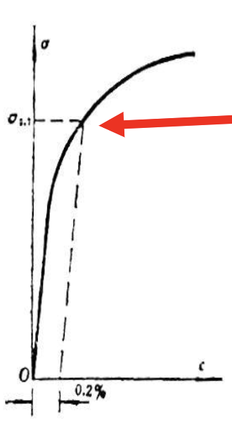
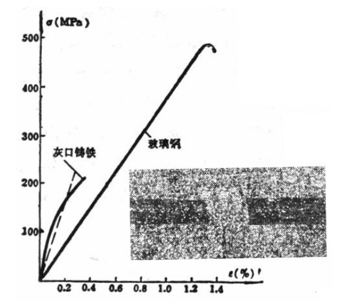

Chapter 2: Tension, Compression & Direct Shear¶
2.1 Axial Tension and Compression¶
Historical perspective
Before Industrial Revolution:
- Timber, Brick, & Mortar
- \(\Rightarrow\) Compressive Loads
After Industrial Revolution:
- Metals, Polymers, Plastics, etc
- \(\Rightarrow\) Tensile Loads
Internal force on cross section¶
{kind=link}
- Force feature: 外力沿着轴线方向
- Deformation feature: 杆件沿轴线方向拉伸或压缩
Axial force diagram（轴力图）
{kind=link}
{kind=link}
{kind=link}
2.2 Internal Force & Stress¶
Stress on Cross Section¶
{kind=link}
Plane cross-section assumption（平截面假设）
If the cross section is initially plane, it remains plane after deformation and perpendicular to the axial line.
在截面处，应力分布是均匀的，所以有
由平截面假设，可以得到
若 \(N(x), A(x)\) 变化不剧烈，则下式也成立：
Saint-Venant’s Principle
如果作用在弹性体一小块表面上的力被静力等效力系替代，这种替换仅仅会使局部表面产生显著的应力变化，而在比应力变化表面的线性尺寸更远的地方，其影响可忽略不计。
影响的区域：圣维南区域

Example 2-2
{kind=link}
Internal Force on Inclined Section¶
\(A_{\alpha}\) 为斜截面面积，\(P_{\alpha}\) 为斜截面上的内力
得到
正应力 \(\sigma_{\alpha} = p_{\alpha} \cos \alpha = \sigma \cos^2 \alpha\)，剪应力 \(\tau_{\alpha} = p_{\alpha} \sin \alpha = \sigma \sin \alpha \cos \alpha\)
Discussions:
- \(\alpha = 0\)，\(\max \sigma_{\alpha} = \sigma\)
- \(\alpha = 45^{\circ}\)，\(\max \tau_{\alpha} = \frac{\sigma}{2}\)
- \(\alpha = 90^{\circ}\)，\(\sigma_{\alpha} = \tau_{\alpha} = 0\)（自由面）
2.3 Mechanical Properties of Materials Under Tension/Compression¶
- Strength
- Hardness
- Toughness（韧性）
- Elasticity
- Plasticity
- Brittleness（脆性）
- Ductility, Malleability（延展性）
应力和应变：
{kind=link}
Elastic Range¶
- Hooke's Law:
\(E\): Elastic Modulus / Young's Modulus（弹性模量/杨氏模量）
属于本构关系
- Proportional Limit \(\sigma_{\mathrm{p}}\)
- Elastic Limit \(\sigma_{\mathrm{e}}\)
Yielding Range¶
- Upper yielding limit: unstable
- Lower yielding limit: stable \(\sigma_{\mathrm{s}}\) reflects the strength of materials.（屈服应力）
- Yielding is related to the maximum sheering stress.
材料进入屈服即失效。
Hardening Range¶
在 d 处卸载，应力退为零，但应变不为零，从弹性转变为了塑性
- Ultimate Strength \(\sigma_{\mathrm{b}}\)
Necking Range¶
颈缩：几何缺陷导致失稳
f 处断裂
Elongation & Reduction of Area¶
- Residual relative elongation \(\delta = \frac{l - l_0}{l_0}\)
- \(\delta < 5\%\)：Brittle materials
- \(\delta > 5\%\)：Ductile materials
- Permanent relative reduction of area \(\psi = \frac{A_0 - A}{A_0}\)
Unloading and Cold-hardening¶
- d 处卸载，斜率也为 \(E\)
- 重新加载，和卸载的曲线重合，但是强度提高（\(\sigma_{\mathrm{p}}\) 增大）
工艺：冷硬化
Mechanical Properties of other Materials in Tension¶
- 对于塑性材料，若没有明显的屈服，工程上约定 \(\sigma_{\mathrm{p0.2}}\)（offset strain = 0.2）为屈服应力 
- 对于脆性材料，线性部分不明显，用割线代替 
{kind=link}
{kind=link}
Mechanical Properties of Materials under Compression¶
{kind=link}
2.4 Criterion of Strength Design¶
Safety Factor and Allowable Stress¶
- Failure
- Ductile: Plastic deformation
- Brittle: Fracture
- Limit stress \(\sigma_{\mathrm{u}}\)
- Ducitle: \(\sigma_{\mathrm{s}}\)
- Brittle: \(\sigma_{\mathrm{b}}\)
- Allowable stress \(\left[\sigma \right] = \frac{\sigma_{\mathrm{u}}}{n}\)（许用应力）
- \(\frac{\sigma_{\mathrm{s}}}{n_{\mathrm{s}}}\): Ductile, \(n_{\mathrm{s}} = 1.2 \sim 2.5\)
- \(\frac{\sigma_{\mathrm{b}}}{n_{\mathrm{b}}}\): Brittle, \(n_{\mathrm{b}} = 2 \sim 3.5\)
Criterion of Strength Design¶
- Strength checking: \(\sigma \leq \left[\sigma \right]\)
- Cross-section designing: \(A \geq \frac{F_N}{\left[\sigma \right]}\)
- Allowable load determining: \(F_N \leq A \left[\sigma \right]\)
How to determine the safety factor?
- 用途越关键，安全系数越大（保守）
- 辅助作用，安全系数较小（经济）
Example 2-3
{kind=link}
Example 2-4
{kind=link}
{kind=link}
{kind=link}
2.5 Deformation of Bar under Tension and Compression¶
{kind=link}
Axial Strain¶
- \(EA\): tensile rigidity（拉伸刚度）
可以看到，这就是胡克定律。
Lateral Strain¶
在线弹性范围内，\(\varepsilon' / \varepsilon = \mathrm{const.}\) 称为泊松比 \(\mu\)。
从热力学上可以证明，\(\mu \in (-1, 0.5)\)。
- \(\mu = 0.5\)：变形后总体积不变
- \(\mu < 0\)：材料拉长，横截面还变大（负泊松比材料）
For steel, \(E \sim 200 \text{ GPa}\), \(\, \mu \sim 0.3\)
{kind=link}
{kind=link}
{kind=link}
{kind=link}
Non-uniform bars¶
- 横截面积分段变化
{kind=link}
$\(\Delta l = \sum \Delta l_i = \sum \frac{N_i l_i}{E_i A_i}\)$
通常情况下轴力 \(N_i\) 相同 - 横截面积连续变化
{kind=link}
$\(\Delta l = \int \frac{N(x) dx}{E A(x)}\)$
2.6 Strain Energy of Bar under Tension and Compression¶
应变能：物体在外力作用下发生形变时，吸收的能量
应变能密度
2.7 Statically Indeterminate Structures¶
约束反力多于独立平衡方程数，需要增加几何变形约束方程和本构方程求解。
静不定结构：结构的强度和刚度均得到提高
求解：
- Equilibrium equation
- Constitutive equation
- Compatibility equation
- 变形协调方程，几何约束
- Complementary equation
- 将变形协调方程代入本构关系，得到补充方程（理论力学得不到的方程）
2.8 Thermal Stress¶
2.9 Assembly Stress¶
Assembly stress only exists in statically indeterminate structures with manufacturing error.